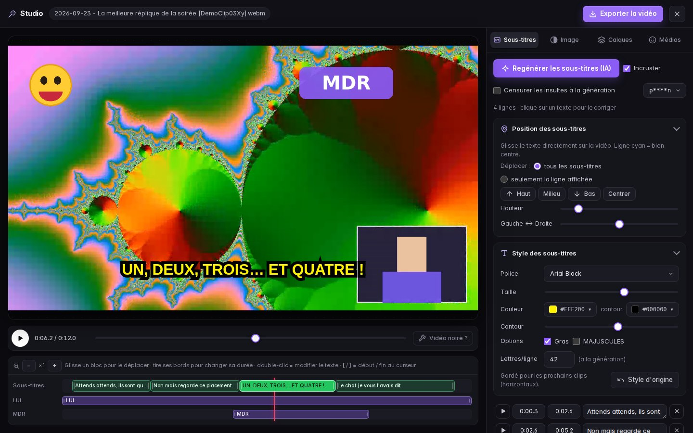
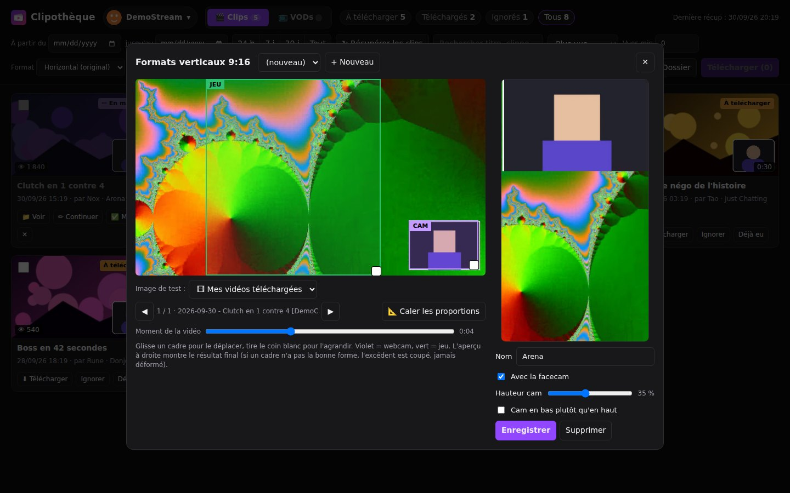
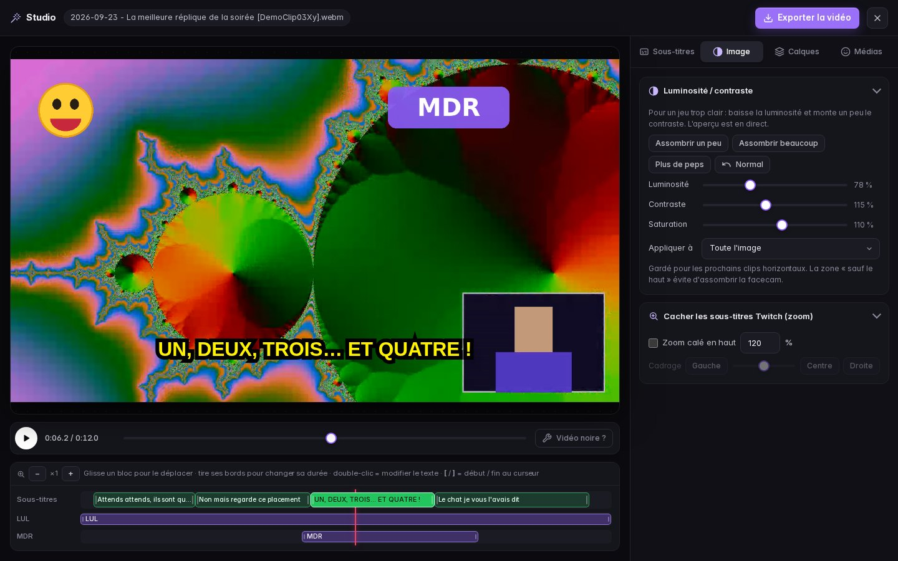

Clipothèque retrouve tous les clips de tes streamers, les télécharge en un clic, les passe en 9:16 et génère les sous-titres par IA directement sur ton PC. Tu ne jongles plus entre un site de téléchargement, ton logiciel de montage, un outil de sous-titres et un tableur de suivi.
Pensée par un monteur, pour les monteurs qui font les best-of, TikTok et Shorts de leurs streamers.
Clips par date, par vues, recherche par titre ou clippeur. Tu vois d'un coup d'œil ce qui est téléchargé, en montage ou déjà monté.
Facecam en haut, jeu en bas : tu règles le cadrage une fois, chaque clip arrive prêt pour TikTok, Reels et Shorts.
Transcription automatique (Whisper), directement sur ton PC. Corrige, déplace, stylise, censure les insultes pour TikTok.
Les emotes de la chaîne (Twitch, 7TV, BTTV, FFZ) récupérées en un clic, à placer et minuter sur la vidéo.
Télécharge une rediff entière ou juste un passage, calé sur les moments clippés, pour avoir plus de contexte.
Un dossier rangé par streamer (clips, VODs, montages, médias). Tu passes de l'un à l'autre en un clic.



Pas de compte Twitch nécessaire, pas de configuration compliquée.
Un installateur Windows classique. Les outils (FFmpeg, yt-dlp) s'installent et se mettent à jour tout seuls.
Colle le lien de sa chaîne Twitch : son dossier est créé, ses clips apparaissent.
Télécharge, passe en vertical, ajoute sous-titres et emotes, exporte. C'est tout.
Toutes les fonctionnalités dans les deux offres. Paiement sécurisé, TVA incluse.
Configuration : Windows 10 ou 11 (64 bits), connexion internet. Pour les sous-titres par IA : 8 Go de RAM conseillés et environ 1 Go d'espace pour le modèle, téléchargé une seule fois.
Les deux offres donnent exactement les mêmes fonctionnalités. Le mensuel est idéal pour tester sur quelques semaines, sans engagement. Si tu montes régulièrement, l'offre à vie revient moins cher dès le 9e mois.
Non. Clipothèque lit les clips et VODs publics de la chaîne à partir de son nom ou de son lien.
Clipothèque est faite pour les monteurs qui travaillent avec l'accord du streamer. Les vidéos appartiennent à leurs auteurs : tu restes responsable de l'usage que tu en fais et du respect des conditions d'utilisation de Twitch.
3 PC par licence (par exemple ton PC fixe et ton portable). Tu peux libérer un PC à tout moment depuis Paramètres → Licence.
Pas pour l'instant : Clipothèque fonctionne sous Windows 10 et 11.
Non. Tout reste sur ton PC, y compris les sous-titres par IA, calculés localement. L'application ne contacte internet que pour lister et télécharger les clips, vérifier ta licence et proposer les mises à jour.
Le montage fonctionne hors ligne. La licence est vérifiée régulièrement et reste valable jusqu'à 14 jours sans connexion.
Depuis ton espace client Lemon Squeezy (lien dans l'e-mail d'achat, ou bouton « Gérer mon abonnement » dans l'application). Tu gardes l'accès jusqu'à la fin de la période payée.
Écris-nous dans les 14 jours suivant l'achat : on te rembourse. Voir la politique de remboursement.
C'est normal pour une application récente. Clique sur « Informations complémentaires » puis « Exécuter quand même ».